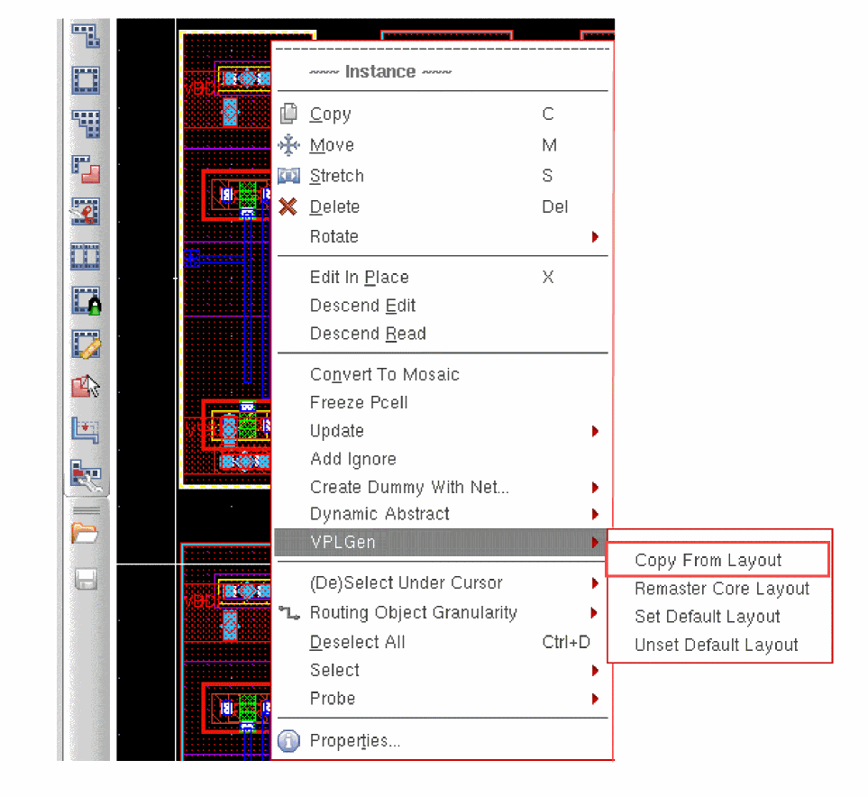
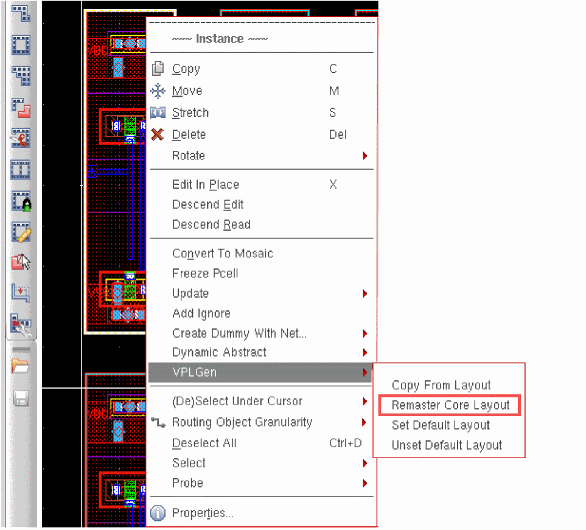

Copying a VPLGen from Layout
Use Copy From Layout to copy an existing core layout into the current design. You can then edit the resultant local copy to meet your specifications.
Copy From Layout requires write permission for the library in order to create the new VPLGen variant in the layout view.
To copy a VPLGen from an existing layout:
- Use Generate Selected From Source to generate an instance of the VPLGen Pcell in your layout.
-
Right click the VPLGen Pcell instance and select VPLGen – Copy From Layout.
The Select Master dialog is displayed. -
Select the library, cell, and view name of the VPLGen variant you want to copy into the design and click OK.
Layout XL copies the selected variant into the design and automatically runs Update Components And Nets with Update Layout Parameters.
You can use Copy From Layout for any Layout XL compliant layout in your Virtuoso session; it need not be a VPLGen core layout. -
Use Edit – Hierarchy – Descend Edit or Edit – Hierarchy – Edit In Place to descend into the resultant instance and make any edits you require.
When a VPLGen instance is edited, the corresponding schematic instance is automatically descended into. -
Choose File – Save and Edit – Hierarchy – Return to save your edited layout as a new layout variant for the VPLGen and return to the top level of your design.
If the variant exists already it is not overwritten. Once created, a variant is never deleted. to remove it, you must delete it manually from the library.
Related Topics
Generate Selected Components Form
Remastering a VPLGen to a Different Core Layout
Use Remaster Core Layout to map a VPLGen Pcell instance to a different core layout already defined in the library. This feature lets CAD teams control what variants are provided by defining and maintaining them centrally and making them available to designers in standard, non-writable libraries. Updates to these centrally-controlled core layouts are automatically reflected in the layout designs that use them.
To remaster a VPLGen Pcell instance to a different core layout,
- Use Generate Selected From Source to generate a VPLGen Pcell instance.
-
Right-click the VPLGen Pcell instance and select VPLGen – Remaster Core Layout.
The Select Master dialog is displayed. -
Select the library, cell, and view name of the core layout you want to map to and click OK.
The VPLGen Pcell instance is updated to reflect the parameter values set in the selected core layout. Any time that variant changes, the VPLGen Pcell instances that are mapped to it are changed as well.
Related Topics
Generate Selected Components Form
Return to top